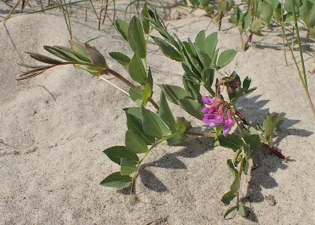

Beach pea
Beach pea is a wild green you can forage from June to August in Atlantic Canada, Quebec, Ontario, British Columbia and The North. Sprawling pea of sandy and pebbly shores with purple flowers and short pods.

When is beach pea in season in Canada?
Beach pea is usually in season June to August. Timing shifts with weather, latitude and altitude.
Where does beach pea grow in Canada?
Beach pea grows in British Columbia, New Brunswick, Newfoundland and Labrador, Northwest Territories, Nova Scotia, Nunavut, Ontario, Prince Edward Island, Quebec, Yukon. Regions: Atlantic Canada, Quebec, Ontario, British Columbia, The North.
How do you recognise beach pea?
Sprawling pea of sandy and pebbly shores with purple flowers and short pods.
How do you harvest beach pea?
Pinch off young tips and top leaves before the plant flowers, when they are tender and mild. Leave the roots and lower leaves so it regrows. Pick away from roads, sprayed verges and dog-walking paths.
How do you eat beach pea?
Young shoots and tiny peas in small amounts, cooked.
How do you store beach pea?
Best fresh.
What is beach pea good for?
Protein.